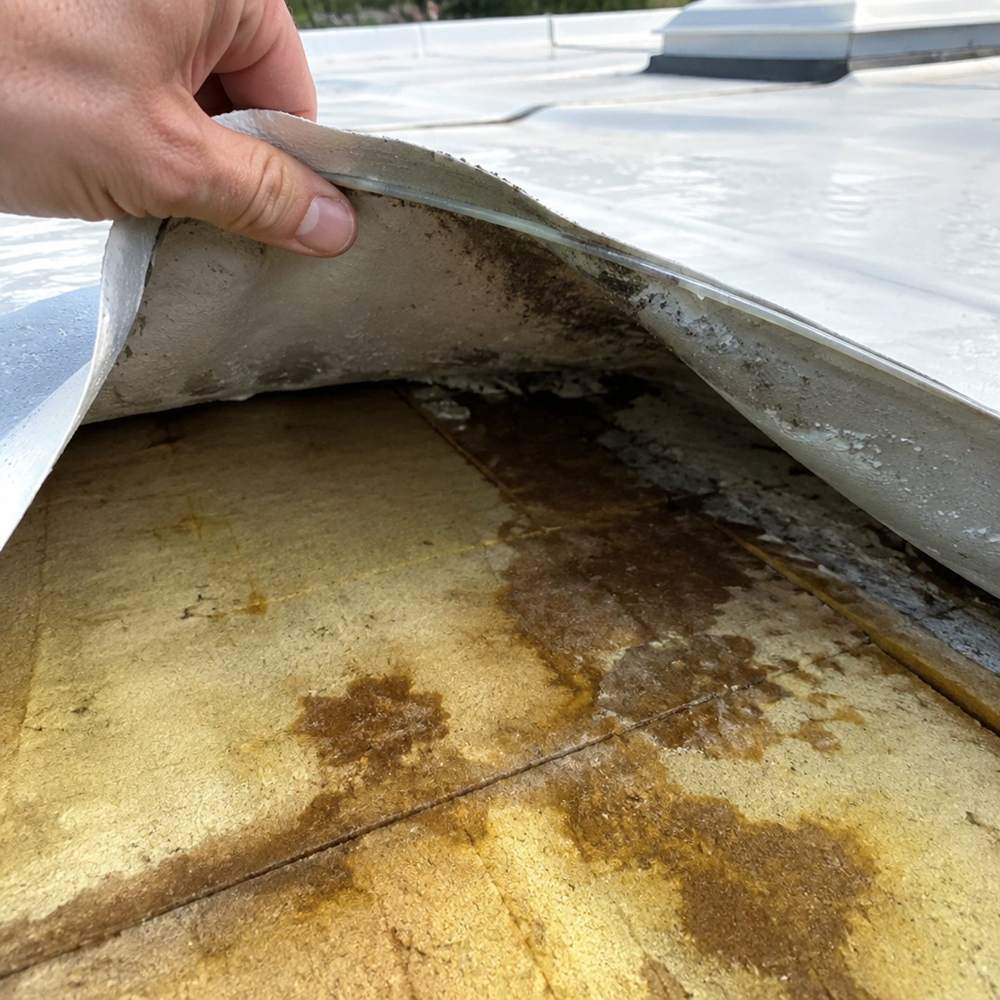

Ремонт и протечки
Находим причину, а не заливаем герметиком. Ремонт швов, примыканий, воронок и локальные заплатки на ПВХ мембране.
Четыре места, откуда течёт
Вода редко приходит «через потолок в том же месте». Чаще она идёт по утеплителю и проявляется в стороне.
Швы
Расходящийся шов видно по кромке: полотно «отходит», между полосами появляется тёмная полоса.
Примыкания к парапету
Самый частый источник: край мембраны не прижат или герметик отслоился.
Воронки
Забитая или плохо приваренная воронка: вода уходит не туда, а под полотно.
Механические повреждения
Инструмент, обувь, техника на крыше. Заплатка варится по контуру.
Ремонт по шагам
Стоимость ремонта
Ремонт считается по объёму и доступу, поэтому фиксированной строки в прайсе нет.
Монтаж «под ключ» — от 30 р./м² по прайсу. Ремонт и обслуживание считаются отдельно, после осмотра.
Течёт? Опишите, где
Скажите площадь, тип кровли и где проявляется вода: подскажем, что смотреть.